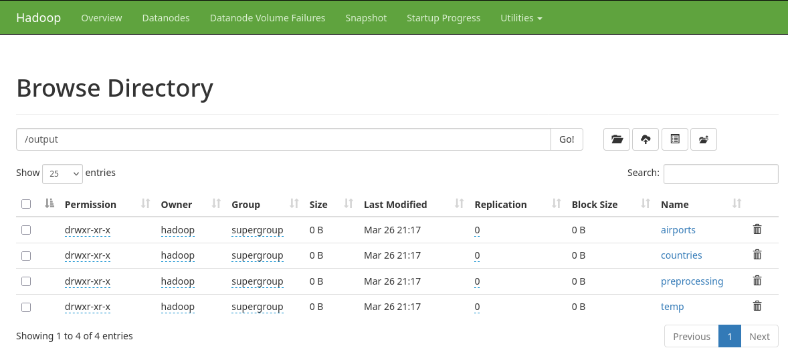
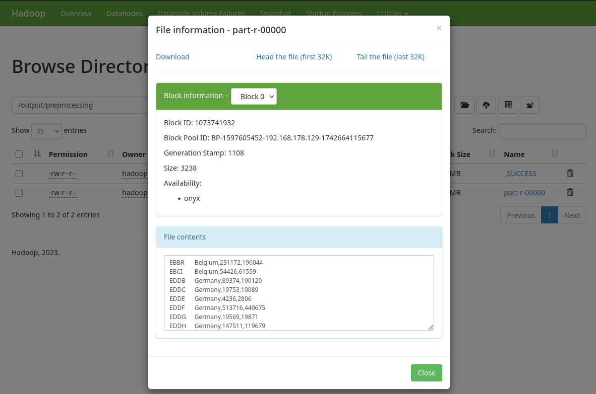
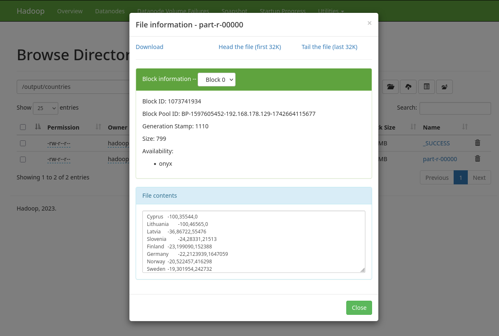

Hadoop MapReduce Analyse von Flugbewegungen
Dieses Projekt analysiert Flugbewegungen von Verkehrsmaschinen europäischer Flughäfen für die Jahre 2019 und 2024.
Ziel ist es, die Veränderung der Flugbewegungen von 2019 nach 2024 pro Flughafen und pro Land, in denen die Flughäfen liegen, zu berechnen und die Ergebnisse absteigend nach prozentualer Änderung zu sortieren.
Datensatz
Grundlage ist die CSV-Datei airport_traffic.csv, in der detaillierte Informationen über Flugbewegungen per Flughafen und Tag enthalten sind.
Die ersten 10 Zeilen der Datei
YEAR,MONTH_NUM,MONTH_MON,FLT_DATE,APT_ICAO,APT_NAME,STATE_NAME,FLT_DEP_1,FLT_ARR_1,FLT_TOT_1,FLT_DEP_IFR_2,FLT_ARR_IFR_2,FLT_TOT_IFR_2
2019,01,JAN,01-01-19,LATI,Tirana,Albania,29,26,55,,,
2019,01,JAN,01-01-19,UDYZ,Yerevan,Armenia,29,33,62,,,
2019,01,JAN,01-01-19,LOWG,Graz,Austria,5,7,12,,,
2019,01,JAN,01-01-19,LOWI,Innsbruck,Austria,28,26,54,,,
2019,01,JAN,01-01-19,LOWK,Klagenfurt,Austria,4,4,8,,,
2019,01,JAN,01-01-19,LOWL,Linz,Austria,1,2,3,,,
2019,01,JAN,01-01-19,LOWS,Salzburg,Austria,22,26,48,,,
2019,01,JAN,01-01-19,LOWW,Vienna,Austria,257,232,489,257,230,487
[...]
- Die Datei enthält 228.729 Zeilen mit Flugverkehrsdaten einzelner Flughäfen für die Jahre 2019 und 2024.
- Nur Datensätze mit einem gesetzten Wert in der Spalte
FLT_TOT_IFR_2werden für die Analyse berücksichtigt, da diese die bereits zusammengezählten (total) Flugbewegungen mit Verkehrsmaschinen (IFR) darstellen. - Dies entspricht 72.627 Zeilen (ca. 32%), welche sich auf Daten zu Passagiers-Flughäfen begrenzen.
Übersicht über die Felder der CSV
Die folgende Tabelle gibt eine Übersicht über alle Spalten der CSV und die Anzahl fehlender Einträge:
| Spalte | Beschreibung | Werte / Beispielwerte | Fehlende Werte |
|---|---|---|---|
YEAR |
Jahr des Fluges | 2019, 2024 | 0 |
MONTH_NUM |
Monat (numerisch) | 1–12 | 0 |
MONTH_MON |
Monat (Abkürzung, engl.) | JAN–DEC | 0 |
FLT_DATE |
Datum des Fluges | z. B. 01-01-19 | 0 |
APT_ICAO |
ICAO-Code des Flughafens | z. B. LATI, UDYZ, LOWG | 0 |
APT_NAME |
Name des Flughafens | z. B. Tirana, Yerevan, Graz | 0 |
STATE_NAME |
Land des Flughafens | z. B. Albania, Austria, France | 0 |
FLT_DEP_1 |
Abflüge (alle Flüge) | 0–847 | 0 |
FLT_ARR_1 |
Ankünfte (alle Flüge) | 0–813 | 0 |
FLT_TOT_1 |
Gesamtbewegungen (alle Flüge) | 0–1628 | 0 |
FLT_DEP_IFR_2 |
Abflüge (Verkehrsmaschinen, IFR) | 0–852 | 156.102 |
FLT_ARR_IFR_2 |
Ankünfte (Verkehrsmaschinen, IFR) | 0–819 | 156.102 |
FLT_TOT_IFR_2 |
Gesamtbewegungen (Verkehrsmaschinen, IFR) | 0–1628 | 156.102 |
Die Davon relevanten Spalten sind YEAR, APT_ICAO, STATE_NAME und FLT_TOT_IFR_2
Projektstruktur
mapreduce-airtraffic/
├── input/
│ ├── airport_traffic.csv
├── src/main/java/dhbw/bigdata/
│ ├── Main.java
│ ├── utils/
│ │ ├── MapReduceJob.java
│ ├── preprocessing/
│ │ ├── PrepMapper.java
│ │ ├── PrepCombiner.java
│ │ └── PrepReducer.java
│ ├── countries/
│ │ ├── CountryMapper.java
│ │ ├── CountryReducer.java
│ │ ├── CPercentageMapper.java
│ │ └── CPercentageReducer.java
│ └── airports/
│ ├── APercentageMapper.java
│ └── APercentageReducer.java
├── pom.xml
└── README.md
Enthaltene Packages
| Package | Aufgabe |
|---|---|
preprocessing/ |
Filtern der CSV & Aggregation der Flugbewegungen pro Flughafen (inkl. Land). Fasst die jeweiligen Werte von 2019 und 2024 in einer Zeile zusammen. |
countries/ |
Aggregation der Flugbewegungen pro Land & Berechnung der prozentualen Veränderung. Sortierte Ausgabe der Länder. |
airports/ |
Mapping nach prozentualer Änderung. Sortierte Ausgabe mit Flughafen als Key. |
utils/ |
utils.MapReduceJob: Definiert Mapper, Reducer und Combiner, Input- und Output-Pfade, Output-Key- und Value-Klassen. Objekte dieser Klasse können mit .run() ausgeführt werden. |
Weitere Dateien in diesem Repository
├── output/
│ ├── preprocessing/part-r-0000
│ ├── temp/part-r-0000
│ ├── countries/part-r-0000
│ └── airports/part-r-0000
└── airtraffic.jar
/output/: Verzeichnisse Analog zu denen im HDFS- 
airtraffic.jar: vorkompilierte JAR-Datei des Projekts
Anleitung zur Verwendung des Sourcecodes
- repository clonen (oder ZIP herunterladen und entpacken) & in das Projektverzeichnis wechseln
git clone https://github.com/sky-ash/mapreduce-airtraffic.git
cd mapreduce-airtraffic
- JAR-Datei kompilieren
- es steht bereits eine vorkompilierte .jar Datei im repository zur verfuegung, deshalb ist dieser schritt nicht zwingend notwendig.
- Prerequisites:
mavenmuss installiert sein
mvn clean package
- (bei Lokaler ausführung) Hadoop starten
- insofern Hadoop bereits korrekt aufgesetzt wurde:
start-dfs.sh
start-yarn.sh
- CSV-Datei in HDFS laden:
- Da der Preprocessing-Job Standardmaessig nach der Datei im
/input/-Directory auf HDFS schaut, sollte sie dort abgelegt werden. - davor muss dieses verzeichnis erstellt werden
- Da der Preprocessing-Job Standardmaessig nach der Datei im
hdfs dfs -mkdir /input
hdfs dfs -put data/airport_traffic.csv /input
/output/-Pfade entfernen- Die vom Programm benoetigten Verzeichnisse muessen frei sein. Deshalb löschen wir diese:
hdfs dfs -mkdir /output/preprocessing/
hdfs dfs -mkdir /output/temp/
hdfs dfs -mkdir /output/countries/
hdfs dfs -mkdir /output/airports/
- alternativ kann auch das
/output/-Verzeichnis als ganzes gelöscht werden:
hdfs dfs -rm -r /output/
- Ausführung
- Nun muss nurnoch die JAR-Datei ausgeführt werden.
- Da alle Input- und Output-Pfade der einzelnen MapReduce Jobs als Standardvariablen vom Code bestimmt werden muss nichts weiter spezifiziert werden.
hadoop jar airtraffic.jar
oder, falls in Schritt 2 selbst kompiliert wurde:
hadoop jar target/airtraffic-3.7-final.jar
- Die Klasse "Main" startet automatisch und fuehrt alle MapReduce Jobs in der richtigen Reihenfolge durch. Daraufhin befinden sich die finalen Analyse-Ergebnisse im HDFS unter:
/output/countries/part-r-00000/output/airports/part-r-00000
Funktionsweise des Codes
Im Folgenden wird Schritt für Schritt erläutert, wie die Daten mithilfe der drei relevanten MapReduce-Packages verarbeitet werden. Diese Packages sind:
preprocessing– Bereitet die Daten aus der CSV-Datei auf und aggregiert Flugbewegungen je Flughafen.countries– Fasst alle Flughäfen eines Landes zusammen und sortiert die Länder nach prozentualer Änderung.airports– Sortiert direkt die Flughäfen selbst nach prozentualer Änderung.
1. Preprocessing
Ziel dieses ersten Jobs ist es, aus der großen CSV-Datei nur die relevanten und gültigen Datensätze herauszufiltern (Jahre 2019 bzw. 2024, gesetzter Wert in FLT_TOT_IFR_2) und pro Flughafen eine aggregierte Zeile bereitzustellen, die sowohl die Gesamtbewegungen von 2019 als auch 2024 enthält.
1.1 PrepMapper
-
Input: Zeilen der Original-CSV aus HDFS.
-
Funktionsweise:
- Überspringt die Header-Zeile.
- Parst nur Zeilen mit gesetzter IFR-Spalte (
FLT_TOT_IFR_2). - Lässt nur
YEAR=2019oderYEAR=2024zu. - Gibt als Key den
airportCode(z. B.EDDF), als Value den String<stateName>,<year>,<flightCount>aus.
-
Ausgabe (Beispielwerte) :
EDDF Germany,2019,12345 EDDF Germany,2024,15600 ...
1.2 PrepCombiner
-
Input: Ausgabe der jeweiligen lokalen Mapper-Instanz, gruppiert nach Key (
airportCode). -
Funktionsweise:
- Summiert vorab die Flugbewegungen je
(airportCode, year), um die Datenmenge schon vor dem Shuffle zu reduzieren.
- Summiert vorab die Flugbewegungen je
-
Ausgabe (Beispielwerte) :
EDDB Germany,89374,190120 EDDC Germany,19753,5000 EBBR Belgium,2019,20000 ...(Gleiche Struktur wie im Mapper, aber mit bereits aufsummierten Teilergebnissen)
Ein Combiner ist sinnvoll, da Summation kommutativ + assoziativ ist und so die Netzwerkbelastung zwischen Mapper und Reducer sinkt.
1.3 PrepReducer
-
Input: Teilergebnisse der Combiner
-
Funktionsweise:
- Finalisiert die Teilsummen der Combiner, sodass je
(airportCode, year)eine Zeile übrig bleibt - kombiniert diese zu Zeilen, die jeweils die Werte beider Jahre enthalten
(total2019, total2024), sodass eine Zeile pro Flughafen entsteht
- Finalisiert die Teilsummen der Combiner, sodass je
-
Ausgabe part-r-00000 :
EBBR Belgium,231172,196044 EBCI Belgium,54426,61559 EDDB Germany,89374,190120 EDDC Germany,19753,10089 ...All diese Zeilen werden in /output/preprocessing/ geschrieben und bilden die Grundlage für die Auswertungen in den nächsten Schritten.

2. Countries
Ziel dieser Job-Kette ist es, alle Flughäfen eines Landes zu aggregieren und anschließend nach prozentualer Änderung zwischen den Jahren 2019 und 2024 zu sortieren. Dazu werden zwei aufeinanderfolgende MapReduce-Jobs ausgeführt:
- Aggregation: Summiert pro Land die kumulierten Flugbewegungen (2019 & 2024).
- Sortierung: Berechnet den prozentualen Unterschied und gibt die Länder in sortierter Reihenfolge aus.
2.1 CountryMapper
-
Input: Ausgabe aus dem Preprocessing (Key =
airportCode, Value =<stateName>,<total2019>,<total2024>). -
Funktionsweise:
- Trennt den Value-String am Komma.
- Übernimmt das
stateNameals neuen Key. - Erstellt als Value ein String-Paar
<total2019>,<total2024>.
-
Ausgabe:
Belgium 231172,196044 Belgium 54426,61559 Germany 89374,190120 Germany 19753,10089 ...
2.2 CountryReducer
-
Input: Alle Werte (Value-Strings) pro Land, gruppiert nach Key (
stateName). -
Funktionsweise:
- Summiert in einer Schleife alle 2019-Werte und 2024-Werte.
- Schreibt anschließend das Land als Key und
<aggregated2019>,<aggregated2024>als Value.
-
Ausgabe part-r-00000:
Austria 281488,246184 Belgium 285598,257603 Bulgaria 59491,58919 Croatia 44331,49663 ...Diese Zwischenergebnisse werden z. B. in /output/temp/ gespeichert und dienen als Input für den Sortierschritt.
2.3 CPercentageMapper
-
Input: Zwischenergebnis aus dem vorherigen Schritt (Key =
stateName, Value =<aggregated2019>,<aggregated2024>). -
Funktionsweise:
- Parst die beiden Zahlen (2019 und 2024).
- Berechnet den prozentualen Unterschied:
(Sonderfall: Wenn 2019=0, wird ein default-Wert (+100 %) gewählt werden.) - Übergibt die Prozentzahl als Key (Integer), sodass Hadoop automatisch nach dieser Zahl sortiert, und übergibt
<stateName>,<aggregated2019>,<aggregated2024>als Value.
-
Ausgabe (Beispieldaten):
-15 France,3523456,2981501 -12 Germany,473117,417943 +11 Albania,19999,22199 ...
(Hier entspricht der Key dem ganzzahligen Prozentwert.)
2.4 CPercentageReducer
-
Input: Wertegruppen, die nach Key (Prozentwert) sortiert eintreffen.
-
Funktionsweise:
- Nimmt den Prozentwert aus dem Key.
- Liest das Land und die beiden Jahreswerte aus dem Value.
- Gibt das Land als Key und
<percentChange>,<aggregated2019>,<aggregated2024>als Value aus.
-
Ausgabe part-r-00000:
Cyprus -100,35544,0 Lithuania -100,46565,0 Latvia -36,86722,55476 Slovenia -24,28331,21513 ...Diese finale Liste der Länder, sortiert nach prozentualer Veränderung, wird in /output/countries/ hinterlegt.

3. Airports
Hier geht es um die prozentuale Veränderung der Flugbewegungen pro Flughafen. Zusätzlich soll im Endergebnis auch das zugehörige Land ausgegeben werden.
3.1 APercentageMapper
-
Input: Wieder das Preprocessing-Ergebnis (Key =
airportCode, Value =<stateName>,<total2019>,<total2024>). -
Funktionsweise:
- Parst die beiden Werte für 2019 und 2024.
- Berechnet die prozentuale Änderung.
- Gibt diese als Key (Integer-Prozentwert) aus und fügt
<airportCode>,<stateName>,<total2019>,<total2024>in den Value.
-
Ausgabe (Beispieldaten):
+4 EDDF,Germany,458273,478013 +2 EGLL,United Kingdom,690050,703112 +8 LOWI,Austria,2814,3032 ...
3.2 APercentageReducer
-
Input: Key = prozentuale Änderung (Integer), Values = Listen von
<airportCode>,<stateName>,<total2019>,<total2024>. -
Funktionsweise:
- Liest den Prozentwert aus dem Key.
- Trennt die Werte aus dem Value.
- Gibt den
airportCodeals Key und<percentChange>,<total2019>,<total2024>,<stateName>als Value zurück.
-
Ausgabe part-r-00000:
ENSG -100,2852,0,Norway EDDT -100,191591,0,Germany EGCC -100,202883,0,United Kingdom ENAL -100,8128,0,Norway ...Damit entsteht in /output/airports/ eine Liste aller Flughäfen, sortiert nach prozentualer Veränderung.